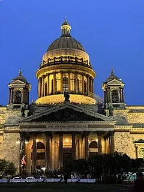

Исаакиевский собор
Один из крупнейших купольных храмов мира. Его монументальный силуэт — узнаваемый символ города. Советую не ограничиваться внешним осмотром: поднимитесь на колоннаду. С высоты около 43 метров открывается одна из лучших панорам исторического центра: Невский проспект, Адмиралтейство, извилистая лента Невы. Это отличная точка, чтобы сориентироваться в городе и сделать эффектные фото. Внутри тоже есть на что посмотреть: мраморные полы, гранитные колонны, витражи и росписи, в том числе работы Карла Брюллова.

Посмотреть сайт собораПетропавловская крепость
Именно с неё в 1703 году началась история Санкт-Петербурга. Сегодня это государственный музей истории города. Прогуляйтесь по мощным бастионам, рассмотрите Петропавловский собор со знаменитым позолоченным шпилем (122,5 м) — одно из самых узнаваемых зданий города. В соборе находятся усыпальницы российских императоров — от Петра I до Николая II. На территории также есть интересные музеи: например, Тюрьма Трубецкого бастиона или выставки о строительстве города и истории флота. Можно подняться на стены крепости — оттуда открываются панорамные виды на Неву и центр. Ещё одна фишка: если окажетесь у Нарышкина бастиона ровно в 12:00, услышите традиционный полуденный выстрел из пушки — это живая традиция, которая создаёт особое ощущение связи времён.
 Посмотреть сайт крепости
Посмотреть сайт крепости
Храм Воскресения Христова (Спас на Крови)
Этот собор сразу выделяется на фоне классической архитектуры центра своими яркими, «сказочными» куполами, украшенными эмалью и мозаикой. Он построен на месте, где было совершено покушение на императора Александра II. Если есть время, загляните внутрь: мозаичное убранство интерьеров действительно впечатляет. Вечерняя подсветка делает облик собора ещё более эффектным.
 Посмотреть сайт храма
Посмотреть сайт храма